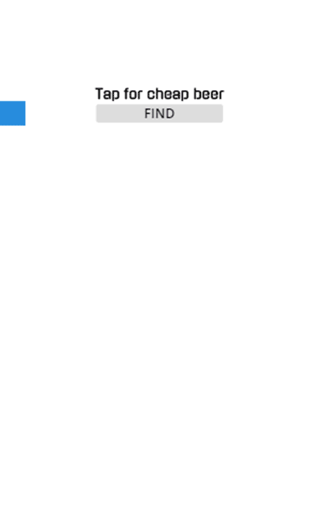
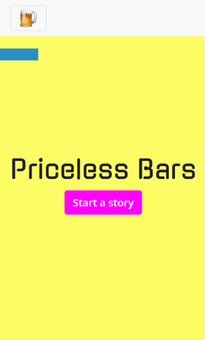

Priceless
Bars
Type: Side project
Idea: A mobile webapp that shows you the path to the closest cheap bar near you
Built with: JS, Bootstrap, Google Maps API and ♥
Link: pricelessbars.live
Why am I showing this?
To give some context, I started coding a year ago and I never
expected that this would become my creative outlet. I found
that working in projects like this is a way to express who I
am and the unimportant things that are important to me.
That being said, I'm showing this project because it is my
firstborn and more importantly because it represents 4 months
of consolidating my understanding of coding, dealing with frustration
and creative block, and developing a detail-minded approach.
The Pre-Process
The project's criteria was the following: it should be simple and beautiful. I had no idea how to build a site, much less how to make it simple. So I figured out that I should start with a wireframe in order to remove all non essential parts.

By the end of this stage, I felt happy that I had a simple project and I was relieved that apparently it was going to take me no time to finish it. (yey)
The Actual Process
Obviously, it did not happen like I thought it would. Once I started, it suddenly hit me that my understanding of coding was basic and for that reason, I needed to do some research and learn new skills.
First, I did an online course on Google Maps API that taught me its limitations and helped me define what else I needed to learn. Then and during the whole project, I relied on FreeCodeCamp and visited every Stack Overflow question with the "google maps" tag on it. This felt endless, although as I kept learning, every small progress felt like being on the first row of a Toto concert.
The Concept
After "finishing" with the functionalities, I began working with the concept. My first idea was to call it "Beers under 40" but after searching it on google I knew I was not the first person to had that in mind. Then, I went inwards and I realized that what I really like about having beers is the uncertainty of what happens after you take your first sip. Hence, I called the site "Priceless Bars".
The design was a whole journey on its own. Getting the right palette and consolidating shapes, borders, and typography took me forever. Not to mention that I needed to start working on the content. It was a slow and iterative process that required me often to go back and change the interactions for the design and vice-versa.
It took me 3 months to get this result:
The last version
The screenshots


Things I've reflected since
- I need to display the device orientation. The GPS takes a while to update its position so it is hard to tell where are you walking towards.
- When it comes to "side projects", a clear structure and a calendar are not "one-more-episode-proof", much less "I don't know what to write, perhaps I'm not made for this"-resistant.